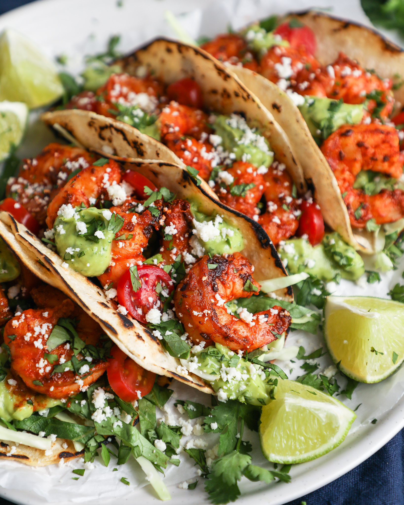

Shrimp Tacos

Description
Get ready for a taste bud extravaganza with these Savory
Grilled Shrimp and Avocado Tacos! Bursting with flavors and
textures, these tacos are a harmonious blend of juicy grilled shrimp,
creamy avocado, and a medley of vibrant ingredients that will transport
your palate straight to a culinary fiesta.
Ingredients
- 1 pound large shrimp, peeled and deveined
- 2 ripe avocados, sliced
- 1 cup diced tomatoes
- 1/2 cup finely chopped red onion
- 1/4 cup chopped fresh cilantro
- 1 lime, cut into wedges
- 1 cup shredded Monterey Jack cheese
- 8 small corn tortillas
- 2 tablespoons olive oil
- 2 cloves garlic, minced
- 1 teaspoon chili powder
- 1/2 teaspoon cumin
- Salt and pepper to taste
Directions
- Prepare the Shrimp Marinade: In a bowl, combine olive oil,
minced garlic, chili powder, cumin, salt, and pepper.
Add the shrimp to the marinade, making sure they are well-coated.
Allow them to marinate for about 15-20 minutes.
- Grill the Shrimp: Preheat your grill or grill pan to medium-high heat.
Thread the marinated shrimp onto skewers for easy grilling. Grill the shrimp for
2-3 minutes on each side or until they turn pink and are slightly charred.
Remove from heat and set aside.
- Warm the Tortillas: Heat the corn tortillas on the grill or in a dry
skillet for about 20 seconds on each side until they are warm and pliable.
- Assemble the Tacos: Place a generous spoonful of the diced tomatoes
on each tortilla. Top with a few slices of avocado and a sprinkle of red onion
and cilantro. Add a couple of grilled shrimp to each taco.
- Cheesy Finale: Sprinkle shredded Monterey Jack cheese over the shrimp
on each taco. The residual heat from the shrimp and tortillas will help melt the
cheese slightly.
- Garnish and Serve: Squeeze a wedge of lime over each taco to infuse a
zesty kick. Serve these delectable tacos with extra lime wedges on the side and
a drizzle of your favorite hot sauce for an extra dash of heat.
Home Page